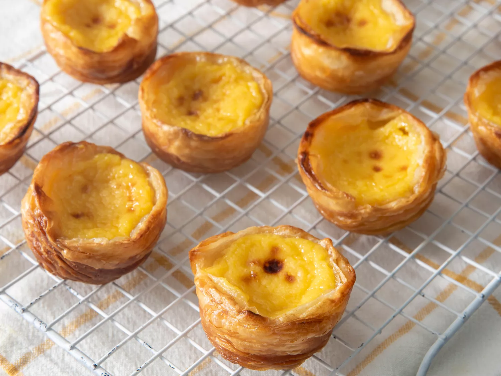

Combine sugar, 1/4 cup plus 1 tablespoon water, cinnamon, and lemon zest in a pot. Boil over medium heat, without stirring, until syrup reaches 210 to 215 degrees F (100 degrees C). Remove from heat.
Preheat the oven to 550 degrees F (288 degrees C). Grease a 12-cup muffin tin.
Whisk flour, salt, and cold milk together very thoroughly in a cold pot. Cook over medium heat, whisking constantly, until milk thickens, about 5 minutes. Remove from heat and let cool for at least 10 minutes.
Whisk egg yolks into the cooled milk. Add sugar syrup and vanilla extract. Mix until combined. Strain custard into a glass measuring cup.
Unwrap the dough and trim any uneven bits on the ends. Score log into 12 even pieces using a knife; cut through.
Place a piece of dough in each muffin cup. Dip your thumb lightly in some cold water. Press your thumb into the center of the swirl; push dough against the bottom and up the sides of the cup until it reaches least 1/8 inch past the top.
Fill each cup 3/4 of the way with custard.
Bake in the preheated oven until the pastry is browned and bubbly, and the tops start to blister and caramelize, about 12 minutes.
Cool tarts briefly and serve warm. Enjoy!
